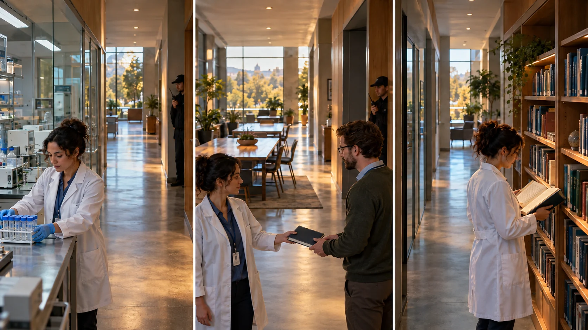

F07 · 고급 · FPV
87명 출연자의 연구소 원테이크
카메라 도착·배우 동작·대기 상태를 나누고 촬영 후 화면에서 어긋난 큐를 찾아 수정한다.
그림에서 확인할 세 가지완주한 비행과 채택할 테이크는 다르다
1연구 행동의 지속
첫 화면에서 연구자가 카메라가 아니라 작업에 집중하는지 본다. 도착한 카메라를 위해 멈춘 듯 보이지 않아야 연구소의 일상이 된다.
2메모를 주고받는 순간
가운데 화면의 손과 메모는 두 사람을 연결한다. 서로 서 있는 모습만 있는 때와 실제로 정보를 전달하는 때의 의미 차이를 읽는다.
3서가의 끝 장면
마지막 화면은 책을 보는 사람과 뒤에서 대기하는 인력을 구별하게 한다. 화면 속 행동과 촬영을 지원하는 준비 상태를 따로 생각한다.
촬영 설계
촬영을 이렇게 설계한다
준비와 출연을 분리한다
제작진은 모두 준비되었는지 확인한 뒤 촬영을 시작했다. 적용할 때는 대기 위치와 화면 속 행동 위치를 나누고 카메라 도착 전에 출연자가 무엇을 준비해야 하는지 정리한다.
일상 행동을 유지한다
연구소는 출연자에게 드론을 바라보지 않도록 안내했다고 설명한다. 학습 장면에서는 시선이 작업·동료·책으로 향하게 하고 카메라를 기다리는 표정이 보이면 행동의 시작점을 다시 잡는다.
녹화 화면으로 판단한다
조종자가 보는 영상과 실제 녹화 화면은 같지 않을 수 있다. 제작 기록처럼 테이크 뒤 결과를 확인하며 인물이 프레임에 늦게 들어온 것인지 카메라가 너무 빨리 지나간 것인지 구분한다.
연구소는 출연자 87명과 진행 인력이 참여한 촬영에서 무전 확인과 시작 신호를 사용했다고 밝혔다.
원본 영상Inside the LMB
1. 시선의 목적지
연구자의 눈이 작업과 동료를 향하는지 본다. 카메라를 기다리는 시선은 자연스러운 업무 장면을 촬영 현장으로 바꿔 보이게 한다.
2. 행동의 완결
메모를 건네는 손이 시작부터 전달까지 읽히는지 본다. 중간만 지나가면 두 사람의 관계보다 손의 움직임만 남는다.
3. 실패 원인의 분리
인물이 늦은 것과 카메라가 빠른 것을 구분한다. 같은 화면 실패라도 바꿔야 할 변수는 출연 큐 또는 이동 속도로 달라진다.
재생이 제한되면 원본 영상 새 창을 이용하세요.
제작진 설명 · 한국어 요약 번역
조종사와 출연자의 준비
기획
번역 요약: 아이디어는 2019년 연구소 영상 공모에서 나왔고 준비에는 몇 달이 걸렸다.
조종 연습
IT 책임자 Paul Hart가 직접 만든 FPV 레이싱 드론을 조종했고 편집 없는 한 번의 샷을 원했다.
그는 약 600시간에서 700시간 비행했고 그중 약 400시간은 시뮬레이터였다.
실내에서도 밤과 주말에 연습했으며 추락에 대비해 예비 드론 두 대를 마련했다.
출연자
출연자 87명은 촬영 전에 대사를 익혔다.
제작진 설명 · 한국어 요약 번역
현장 신호와 테이크 검토
현장 신호
번역 요약: 경로를 따라 안전 담당자 14명이 배치되어 매 테이크 전에 무전으로 준비 상태를 확인했다.
에어혼이 각 테이크의 시작과 끝을 알렸고 출연자에게 드론을 보지 말라고 상기시켰다.
녹화 검토
조종사는 고글 화면만 볼 수 있고 GoPro 녹화는 볼 수 없어 테이크 뒤 제작팀이 검토했다.
결과
앞선 네 번은 사람과 드론의 위치 등에서 문제가 있었고 다섯 번째에 완성했다.
음악을 포함한 소리는 드론 소음 때문에 후반에 더했고 최종 길이는 4분 39초다.
Kling 프롬프트단문 인과 체인 · 16:9
내가 직접 만들어 본다
카메라 도착, 출연자 행동, 대기 상태를 나누어 화면에는 일상 행동만 남기는 인과를 지시한다.
- S01연구소 실험실에서 연구자들이 각자 일하고 있다.
- S02영상은 하나의 연속 쇼트다.
- S03화면에 드론 기체는 나오지 않는다.
- S04처음 10초 동안 카메라가 실험대 쪽으로 다가간다.
- S05연구자는 카메라가 오기 전부터 작업을 하고 있다.
- S06연구자는 카메라를 보지 않고 손 위의 작업만 본다.
- S07다음 10초 동안 카메라가 두 연구자 사이에 도착한다.
- S08카메라가 도착하는 때에 맞춰 한 연구자가 메모를 건넨다.
- S09다른 연구자가 메모를 받아 읽는다.
- S10메모가 건너가기 때문에 두 사람이 연결된 것으로 읽힌다.
- S11마지막 10초 동안 카메라는 서가로 이동한다.
- S12서가 앞에서는 책을 보는 사람만 화면에 들어온다.
- S13대기하는 사람은 서가 뒤 시야 밖에 머문다.
[네거티브]
- 연구자들이 일을 멈추고 줄지어 서서 대기하는 것 금지
- 컷이 나뉘어 실험실이 여러 장면으로 끊기는 것 금지
- 화면에 드론 기체가 나타나는 것 금지
- 카메라가 실험대를 지나쳐 빈 복도로 빠지는 것 금지
- 카메라가 도착한 뒤에야 연구자가 작업을 시작하는 것 금지
- 연구자가 카메라를 쳐다보며 놀라거나 멈추는 것 금지
- 카메라가 두 사람에게서 멀리 떨어져 도착하는 것 금지
- 메모를 건네는 동작이 드론 도착보다 일찍 끝나는 것 금지
- 다른 연구자가 메모를 받지 못하고 손만 내미는 것 금지
- 두 사람이 나란히 서 있기만 하고 주고받음이 없는 것 금지
- 카메라가 서가가 아닌 다른 장소로 방향을 바꾸는 것 금지
- 책 보는 사람 대신 카메라를 보는 사람이 들어오는 것 금지
- 대기 인원이 화면 안에 서서 연기자처럼 보이는 것 금지
- S01영상은 FPV 시점의 하나의 연속 쇼트다.
- S02화면에 드론 기체는 나오지 않는다.
- S03연구소 실험실에서 연구자들이 각자 일하고 있다.
- S04처음 10초 동안 카메라는 실험대를 향해 질주한다.
- S05연구자는 카메라가 오기 전부터 작업을 하고 있다.
- S06연구자는 카메라를 보지 않고 손 위의 작업만 본다.
- S07카메라는 연구자의 어깨 옆을 스치며 지나간다.
- S08카메라는 장비 선반 사이를 점점 가속한다.
- S09다음 10초 동안 카메라는 두 연구자 사이를 비집고 통과한다.
- S10도착하는 때에 맞춰 한 연구자가 메모를 건넨다.
- S11카메라가 메모를 중심에 두고 빙글 한 바퀴 돈다.
- S12도는 동안 실험대와 서가가 차례로 스쳐 지나간다.
- S13다른 연구자가 메모를 받아 읽는다.
- S14마지막 10초 동안 카메라는 서가를 향해 질주한다.
- S15카메라는 급감속하며 서가 앞으로 파고든다.
- S16서가 앞에서는 책을 보는 사람만 화면에 들어온다.
- S17대기하는 사람은 서가 뒤 시야 밖에 머문다.
- S18그 결과 화면에는 일상 행동만 남는다.
[네거티브]
- 영상이 여러 컷으로 끊겨 이어지는 것 금지
- 화면에 드론 기체가 나타나는 것 금지
- 연구자들이 가만히 서 있는 것 금지
- 카메라가 느리게 떠다니기만 하는 것 금지
- 카메라가 오면 그제야 행동하는 것 금지
- 연구자가 카메라를 쳐다보는 것 금지
- 연구자와 멀리 떨어져 지나치는 것 금지
- 속도가 일정해 가속이 느껴지지 않는 것 금지
- 두 사람 사이로 들어가지 않는 것 금지
- 도착 전후로 메모 건넴이 어긋나는 것 금지
- 메모 없이 무의미하게 도는 것 금지
- 도는 동안 풍경이 바뀌지 않는 것 금지
- 메모가 전달되지 않고 사라지는 것 금지
- 서가로 가는 이유가 보이지 않는 것 금지
- 속도가 줄지 않고 서가를 지나치는 것 금지
- 대기하는 사람이 화면에 보이는 것 금지
- 대기하는 사람이 프레임에 들어오는 것 금지
- 카메라를 기다리는 표정이 남는 것 금지
결과에서 볼 것
- 카메라가 도착하기 전부터 연구자가 일하고 있었는가
- 메모가 두 사람의 연결을 만들었는가
- 대기하는 사람이 화면 밖에 머물렀는가